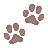

Benefícios
- Adote um cãozinho e ganhe uma caminha. 
- Banho e tosa de brinde em um pet shop
- Adote e ganhe uma linda coleira

Somos uma ONG que se dedica a proteger, resgatar e acolher bichinhos em alguma situação de risco. A sigla ONG significa Organização NÃO Governamental. Isso quer dizer que todo o trabalho é feito sem nenhum tipo de contribuição vinda de uma instituição do governo. Normalmente, as pessoas que realizam as ações fazem isso de maneira voluntária. No caso da ONG de adoção de animais, o trabalho é todo voltado para os bichinhos. Por esse motivo, cobramos um valor simbólico de 1 real para ajudar a manter nossos custos! Adote um bichinho!!
Nossa missão é: Diminuir cada vez mais os maus tratos de animais e evitar atropelamentos e abandonos, que são cada vez mais frequentes.
Nosso estabelecimento está localizado no coração da cidade.